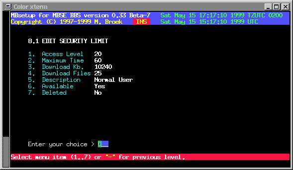

Last update 09-Feb-2002
MBSE BBS Setup - BBS Setup - Security Limits.
Security limits, introduction.
Every BBS needs several security limits to make a difference between several user groups. These are the twits, regular users and (co-)sysops. If you have a donation system you will probably have more different levels. Every level a user can have must have a record in this file. To operate MBSE BBS you need at least 3 levels, twit with level 0, new users with the level as setup in 1.7.1, and the sysop level as setup in 1.5.4 As said, for special usergroups you can add more levels as you need. If a user logs in and has a level in the userbase you didn't define here, he won't be able to login. Even the twit level needs some access to be able to throw him out in a nice but friendly way, give him 5 minutes, 1 file to download and no more then 1 Kb so he will understand he is not wanted. Some defaults are installed during first bbs setup.
Limits setup
Access level The access level value. Maximum time The maximum time each day. If set to zero, the user gets 24 hours a day. Download Kb. Maximum Kilobytes download each day, zero is unlimited. Download Files Maximum files to download each day, zero is unlimited. Description The description for this level. Available If this level is available. Deleted If this level must be deleted.So if you completly want to disable a users ratio's, set Maximum time, Download Kb and Download files to zero. A users session is still limited to 24 hours.

 Back to BBS index
Back to BBS index